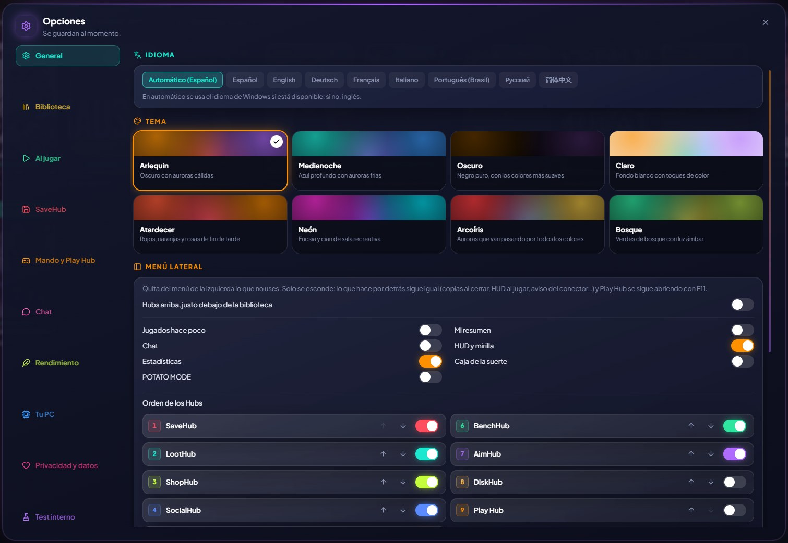

🎨
내 취향대로
테마, 언어, 그리고 GameHub의 동작 방식.
테마를 고르세요(Arlequin, Midnight, 완전한 검정의 다크, 흰 배경의 라이트. ArlequinPro가 있으면 Sunset, Neon, Rainbow, Forest도 사용 가능). 언어는 영어, 스페인어, 중국어 간체, 러시아어, 포르투갈어(브라질), 독일어, 프랑스어, 이탈리아어, 일본어, 폴란드어, 아랍어, 카탈루냐어, 튀르키예어, 한국어, 우크라이나어를 지원합니다. 사양이 낮은 PC를 위한 라이트 모드는 애니메이션, 투명 효과, 발광 효과를 없앱니다(시작 화면에서 바로 켤 수 있습니다).
GameHub는 Windows와 함께 시스템 트레이에 숨겨진 채로 시작할 수 있습니다(다른 런처로 플레이해도 플레이 시간을 세고 세이브를 백업합니다). 스스로 업데이트하며(버전을 건너뛰면 새 소식을 한꺼번에 보여 줍니다), 처음에는 스토어별로 게임을 보여 주므로 게임이 아닌 항목은 제거할 수 있습니다.
옵션 → 일반 → 업데이트에서 “안정 버전만”을 선택할 수 있습니다.
옵션 → 개인정보 및 데이터에서 Arlequin 제작자에게 아이디어나 문제점을 보낼 수 있고(답장을 원하면 이메일이나 Discord와 함께), 중요한 일이 있으면 창 위쪽에 Arlequin 공지가 표시됩니다.
사용 방법
- 옵션: 각 페이지 맨 위에 그 페이지에서 설정하는 내용이 설명되어 있습니다.

✦ 다른 기능